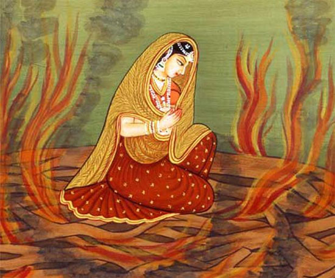
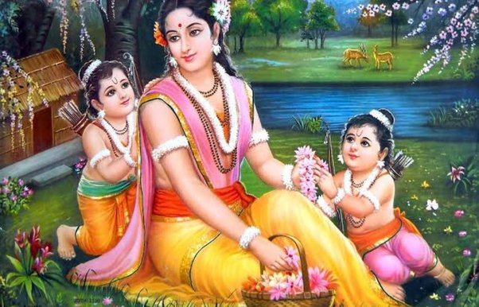
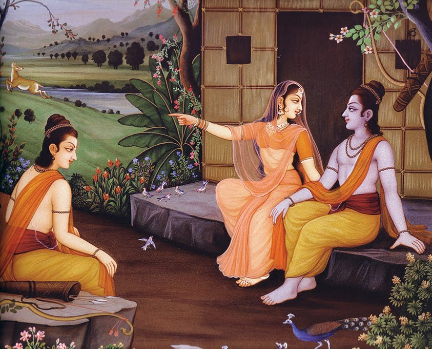

SITA
Sita is the wife of Rama and one of the central figures in the story. Sita is revered for her purity, devotion, and resilience in the face of adversity. Her character is rich with symbolism, and she represents various ideals and virtues that are central to Hinduism.
Earth: Sita is also associated with the earth, which represents her stability, fertility, and groundedness. In Hindu mythology, the earth is often personified as a goddess, and Sita is sometimes referred to as the "daughter of the earth."
Purity :
Sita's purity is often tested in the Ramayana, and she is put through a trial by fire to prove her innocence and fidelity. The fire symbolizes both purification and transformation, and Sita emerges unscathed, demonstrating her unwavering devotion to Rama. ( Sita is understanding of Rama's concerns, and out of devotion to her husband, she steps into a blazing fire to show her husband that she has been completely loyal to him. Unsurprisingly, Sita passes the fire test, known as Agniparikshā. Agni carries Sita out of the flames to show Rama how pure she is.)

Patience and endurance:
ita is known for her patience and endurance, as she remains steadfast in her devotion to Rama even when faced with unimaginable hardships. Her resilience in the face of adversity is a symbol of inner strength and perseverance.
Responsibility :
Rama tries to discourage Sita from joining him in exile, but she is adamant and says that she would be with him, no matter what, as it was the duty of the wife to be at his side at all times.
Epitome of Womanhood:
Sita's life was filled with trouble and turmoil and yet, she stoically maintained her calm and dignity throughout. Certain versions of the Ramayana relate that Sita was actually a reincarnation of Vedavati, an avatar of Goddess Sri Mahalakshmi.

Self-respect and courage:
Sita even subdues Hanuman with her powerful words. When Hanuman manages to locate her in Ashokvan, he is intent of immediately taking her with him, so that she can escape from there and be together with Rama. Hanuman offers to take Sita on his back and transport her to his Lord. Sita, however, declines and states that she would never want to run away like a cowardly thief and that she would want her husband to battle and victor against Ravana instead.
Innocence:
When Sita sees the golden deer, she is totally charmed and asks Rama to capture it and bring it to her. Mareecha imitates Rama's voice so well that both Sita and Lakshmana are convinced that it is indeed Rama asking for help. The Lakshmana Rekha is drawn in order to protect her and act as a barrier to some outsider wanting to step inside. Ravana takes the disguise of a sadhu (mendicant) and stands in front of the hut, calling for alms. Sita tries to give the sadhu the alms from inside the line drawn by Lakshmana, but he insists that he would accept the bhiksha (alms) only if she stepped forward and handed it to him. As soon as Sita crosses the Lakshmana Rekha, the terrible Ravana takes his original form, lifts the entire piece of earth with Sita standing on it.

Pain & Ordeal :
Though Rama knows that Sita is innocent, he is forced to heed the words of his praja (citizens he ruled over) and sends Sita off into an exile all over again. This he does without even informing her or safely leaving her in some sage's ashram. Instead, Rama sends Lakshmana to accompany her into the forest and leave her there.
Overall, Sita is considered a symbol of purity, devotion, and feminine strength. Her story continues to inspire people around the world, and her character serves as a reminder of the importance of staying true to one's principles and values, even in the face of great challenges.